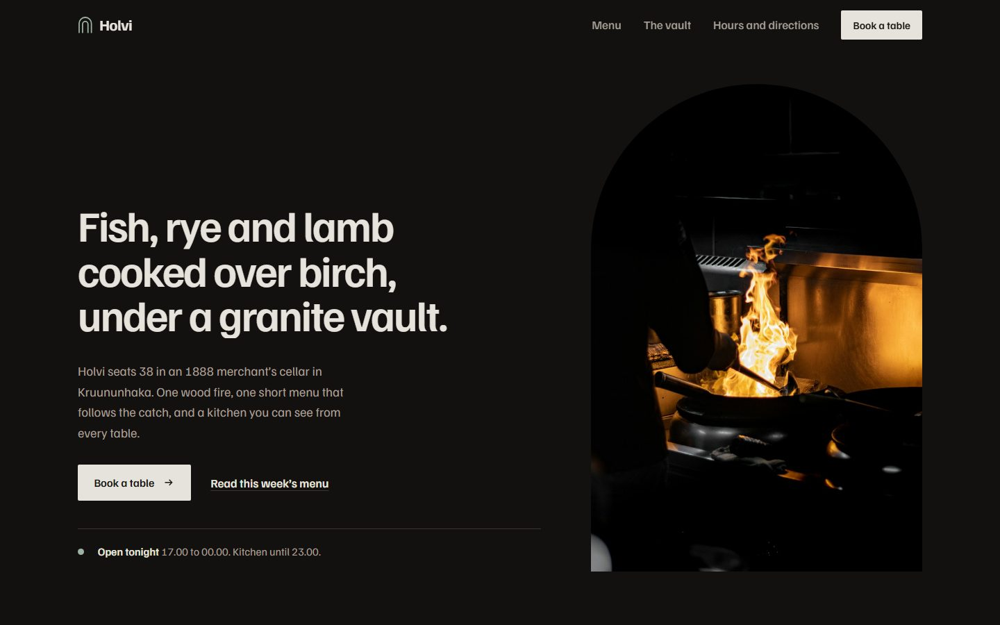
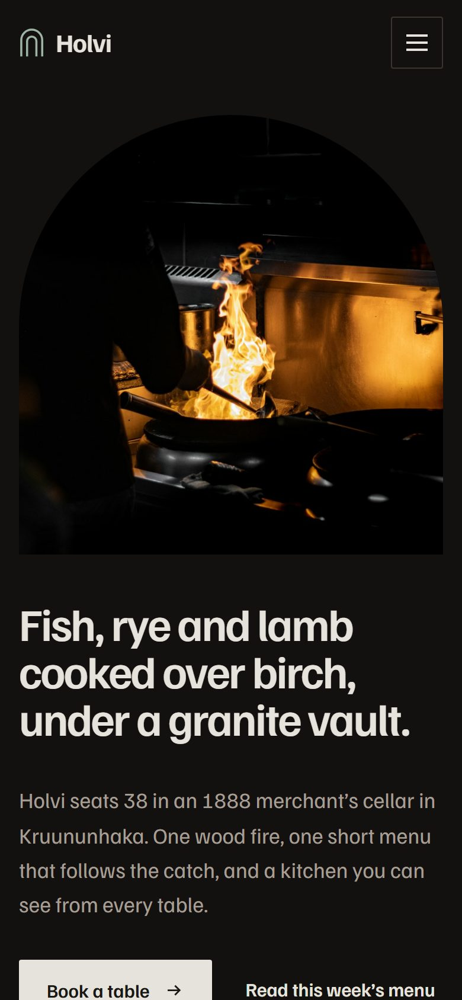

Holvi, ravintolakonsepti
Konseptisivusto kuvitteelliselle ravintolalle, joka kokkaa avotulella helsinkiläisessä kellarissa: neljä erillistä sivua, ruokalista, jonka voi suodattaa kypsennystavan mukaan, ja pöytävarauslomake. Tehty portfoliota varten.
- Neljä sivua suomeksi, ruotsiksi ja englanniksi
- Ruokalistan suodatin ja ajantasaiset aukioloajat
- Pöytävarauslomake
Holvi on kuvitteellinen. Ruokalista ja historia ovat keksittyjä.